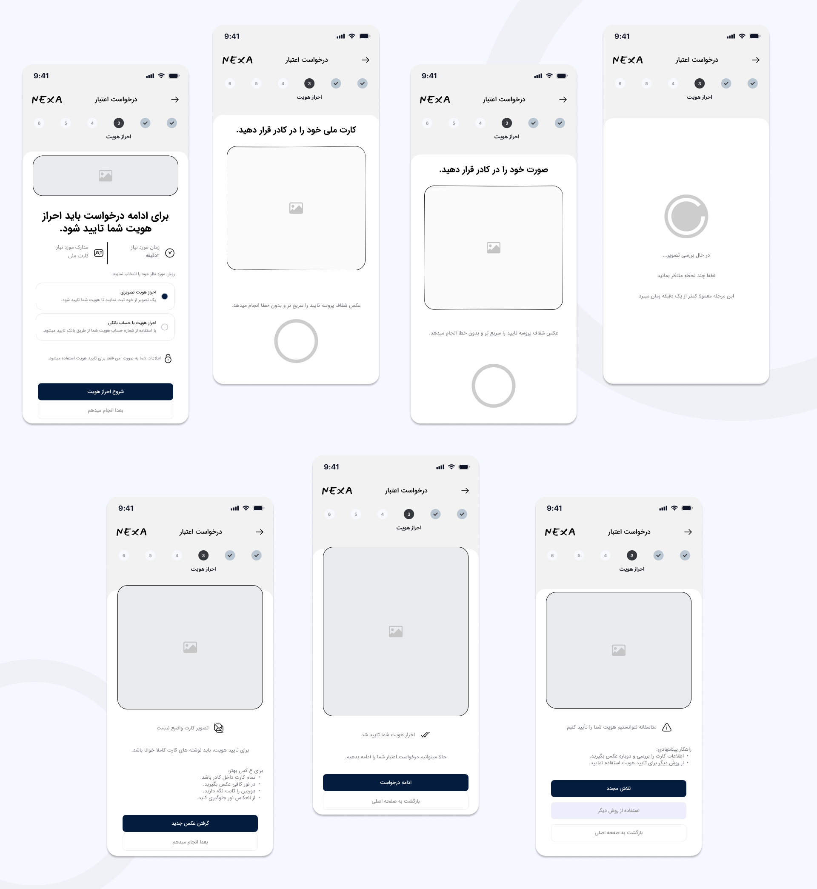
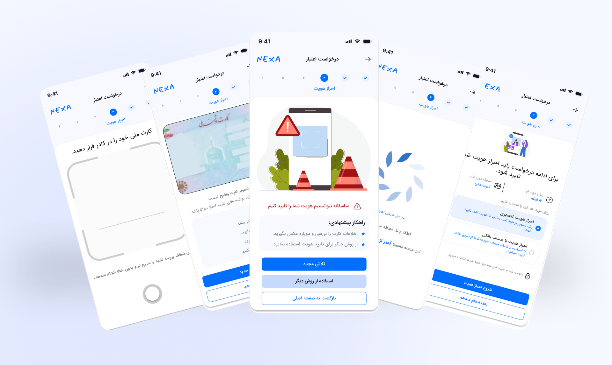

01 — Overview
Project Overview
Nexa is a fintech platform that enables users to apply for credit digitally, review their financial status , and manage their transactions.In this project, I focused on redesigning the identity verification experience, as this is a critical step in the credit application journey. Errors at this stage can create friction and lead users to abandon the application.
The Problem
User behavior analysis showed that a significant number of users started a credit application but abandoned it before completing the process.Initial analysis indicated that identity verification, particularly when errors occurred, was one of the key drop-off points.
Key Question
How might we help users understand identity verification errors and recover from them without abandoning their credit application?
Goal
Increase the credit application completion rate by reducing drop-off during identity verification.
02 — Research & Findings
What the data revealed
I analyzed 12,000 credit applications and 75,364 events using Python and Pandas to identify where users dropped off and what factors contributed to abandonment. The analysis showed an overall completion rate of 34.07%, with 65.93% of applications abandoned before submission. The largest drop occurred at the financial information step, while identity verification errors also emerged as an important source of friction.These findings helped narrow the focus toward error recovery and clearer guidance, particularly during identity verification.

Research Approach
To identify where users dropped off and validate the hypotheses, I analyzed user behavior across the credit application journey using Python and Pandas. The dataset included user type, device, application stages and final status, conversion and drop-off rates, time spent, and the number of errors experienced.
- Identity verification was a key drop-off point Funnel analysis revealed a significant drop across the identity verification stages, with the largest drop occurring when users moved from identity verification to financial information.
- More errors were associated with lower completion Users who experienced more errors had a lower likelihood of completing the application, highlighting the importance of clear error handling and recovery.t.
- Mobile users experienced higher drop-off The drop-off rate was higher among mobile users than desktop users. This made mobile constraints and usage conditions an important consideration when redesigning the experience..
User Need
“I want to understand what went wrong and know how to fix it so I can continue my application.”

Design Opportunities
How might we make the identity verification experience clearer and easier to recover from when errors occur?
- Clearly explain what went wrong and what the user needs to do next.
- Allow users to recover from errors without having to restart the entire process.
- Provide clear guidance before photo upload, including the required image type and key criteria for an acceptable photo.
- Help users understand where they are in the application process and what steps remain.

03 — Design
Wireframes
The redesign focused on a mobile-first Persian RTL experience, clearer system feedback, more explicit recovery actions and stronger visual hierarchy.

Design

05 — TESTING
Testing the new direction
I tested the identity verification flow with 5 participants to evaluate task completion, error understanding, and users’ ability to recover and continue the process after encountering an error.
Participants
5 users: 3 new users and 2 returning users, with a focus on the mobile experience.
Test Goals & Success Metrics
The goal was to assess how well users understood verification errors and whether they could continue and recover from the process without assistance.
Scenario
Imagine you have applied for a 50 million toman credit through Nexa and have reached the identity verification step. Please complete the process as far as you can.
- Task 1: Start the identity verification process.
- Task 2: Upload your identification document.
- Task 3: The uploaded image is unclear. What would you do?
Key Findings
- Recovery guidance was insufficient
- Alternative verification paths were not visible enough
After an unsuccessful verification attempt, users did not have enough information to understand what went wrong or decide what to do next.
Some users did not notice that they could use an alternative method to complete the identity verification process.

Result & Learning
Impact on the Product.
The redesigned experience focused on making errors clearer and improving the recovery path, with the goal of helping users:
- Understand why their identity verification failed more quickly.
- Find the appropriate next step more easily.
- Continue the verification process without restarting from the beginning.
- Rely less on support or external assistance.
Expected Impact
Increase
- Credit application completion
- Recovery success
- User confidence in the identity verification process
- Clarity and predictability of the experience
Reduce
- Drop-off during identity verification
- Unnecessary user effort
- Abandonment after an error
- Support requests related to identity verification
The goal of the redesign was to turn an ambiguous error state into a clear and recoverable path so users understand what happened, what to do next, and how to continue without losing their progress.